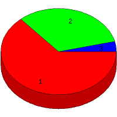

Week of 6/6/2010 to 6/12/2010: Top
3 of
3 File Types (Extensions)
Sorted by Access Count
Individual file types as determined by file extensions. All URLs that
do not contain an extension are counted as directories.

| Rank |
Type |
Accesses |
% |
Bytes |
% |
| 1 |
html
|
70 |
63.64 |
1,049,073 |
83.71 |
| 2 |
Directory (folder)
|
36 |
32.73 |
198,520 |
15.84 |
| 3 |
ico
|
4 |
3.64 |
5,624 |
0.45 |